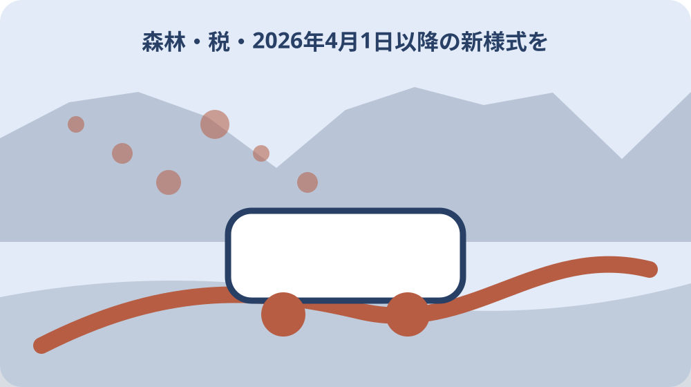

先に結論を確認する
この記事の答え：済んだことにはなりません。固定資産税、森林土地所有者届、不動産登記は別の制度です。対象森林を取得した場合は、取得日から90日以内の届出を森町林政係へ確認します。
森町で最初に照合する条件：取得地が地域森林計画対象民有林に該当するかを地番で森町林政係へ確認する。
森林取得の記録を三つの別冊に分ける
森林を相続や売買で取得すると、納税通知書、登記書類、森林土地所有者届が同じ封筒へ集まりがちです。しかし、固定資産税は1月1日、森林の届出は取得日から90日、不動産登記は別の根拠と期限で動きます。最初から三冊へ分けます。
一冊目は固定資産税資料で、対象年度、納税義務者、通知先、地番を記します。二冊目は森林土地所有者届で、取得原因、起算日、90日目、対象森林確認、提出物を置きます。三冊目は登記で、申請状況と登記事項を保管します。例えば相続では、税冊子へ相続人代表者指定届、森林冊子へ死亡日から数えた提出期限、登記冊子へ法務局へ出す資料を置けば、同じ戸籍を使う場面があっても手続の完了条件を取り違えません。
林野庁は森林土地所有者届が不動産登記とは別の制度であり、登記をしたかどうかにかかわらず対象なら届出が必要だと説明しています。森町の固定資産税案内も税の納税義務者を示すもので、森林届の受付完了を証明する資料ではありません。
三冊の表紙には同じ物件番号を付けます。別冊にするのは関係を切るためではなく、基準日と完了条件を混ぜないためです。地番一覧だけは三冊に共通させ、更新した人、更新日、元資料の所在を記録します。
90日の起算日を取得原因別に確定する
森町公式と林野庁は、対象森林の所有者となった日から90日以内に届出が必要と案内しています。売買なら契約書や登記事項で取得日を確認し、相続なら森町公式が示す前所有者の死亡日を起算日欄へ記します。
相続登記が終わった日、納税通知書が届いた日、森林があると家族が知った日を、届出の起算日へ都合よく置き換えません。個別事情で判断に迷うときは、死亡日、取得原因、地番を示し、90日を過ぎる前に森町林政係へ相談します。
期限表には起算日、30日目、60日目、90日目を置きます。30日目までに対象森林の確認、60日目までに位置図と取得原因資料、90日目までに提出という内部目安を作れますが、これは編集上の段取りであって町が定めた中間期限ではありません。
すでに90日を過ぎた可能性がある場合も、日付を作り替えたり登記完了を待ったりしません。取得原因が分かる資料と経過をそろえ、担当窓口へ事情を伝えます。この記事は遅延時の法的効果や個別対応を断定しません。相談メモには、遅れに気付いた日、前所有者の死亡日または契約上の取得日、これまで確認した部署、手元にある位置図を列記します。担当者が事実経過を追える状態にすることが、推測で期限を動かすより先です。
地域森林計画対象民有林か地番で照会する
届出対象は、森林法第5条に基づく地域森林計画の対象となる民有林です。山林のように見える土地すべて、登記地目が山林の土地すべて、と単純に置き換えることはできません。森町公式も詳しくは担当課へ連絡するよう案内しています。
照会前に町名、大字、字、地番、面積、取得原因、現況が分かる資料をそろえます。複数筆を一括して尋ねず、地番ごとに対象、対象外、確認継続の欄を作ります。口頭回答には確認日と部署名を添えます。
森林計画図や公図の画像を使う場合は、縮尺、凡例、基準日を残します。画面を切り取った位置だけで境界を確定せず、対象区域の照会資料として扱います。所有界や筆界の判断が必要なら、林務の対象確認とは別に専門家へ相談します。
対象外と確認できた土地も削除せず、誰がどの資料で確認したかを記します。後で別の地番と混ざるのを防げます。対象か不明な間は届出不要と決めず、90日の管理を続けながら林政係からの回答を待ちます。回答が電話の場合は地番を復唱し、全筆か一部筆かも確認します。後日区域資料が更新されたときに再確認できるよう、対象確認の根拠と確認年月日を森林冊子の表紙へ転記します。

登記地目と現況を同じものにしない
林野庁は、登記上の地目にかかわらず、取得した土地が森林の状態であれば届出対象となる可能性が高いと注意を促しています。登記事項の地目欄だけで対象外にせず、現況写真と地域森林計画の対象確認を別々に残します。
反対に、地目が山林だから自動的に地域森林計画対象だとも断定しません。制度の対象は計画区域との関係で確認します。地目、課税地目、現況、計画対象の四欄を作り、同じ表現だった場合も根拠資料をそれぞれ記します。
現地確認では公道から見える範囲を基本とし、無断で隣地や作業道へ入りません。撮影方向、天候、確認日を写真へ付け、竹林、草地、植林地など見た状態を記述します。樹種や境界を専門知識なしに確定しません。
資料間に差があれば、どちらかを誤りと決める前に基準日を比べます。登記は権利の公示、固定資産資料は課税、森林計画は森林行政という目的の違いがあります。差異の一覧を窓口へ示すことが、説明を短くする助けになります。
2026年4月1日以降の新様式を取得する
森町公式と林野庁は、2026年4月1日以降の届出から様式が変更されたと案内しています。林野庁は新所有者の国籍等が追加記載事項になったと説明しています。提出日がこの日以降なら、保存済みの旧様式をそのまま使いません。
様式ファイルは森町公式ページから提出準備日に取得し、ファイル名へ取得日を入れます。記載例も同時に保存します。国の様式を参考にしても、提出方法は自治体ごとに異なる場合があるため、森町の案内と窓口確認を優先します。
法人の場合は代表者や役員等に関する追加項目、国外居住の場合は国内連絡先など、林野庁が示す新事項があります。自分の案件へどこまで必要かを記載例だけで推測せず、法人資料や住所資料をそろえて林政係へ確認します。
2026年3月までに作成を始めた書類を4月以降に提出する場合も、作成日ではなく提出時の様式を確認します。差替えた旧様式は誤送信を防ぐため「使用不可」と表示し、過去の検討履歴として保管するなら新様式と別のフォルダへ置きます。新旧比較表には、国籍等の追加欄、法人の場合の追加確認、国外居住者の国内連絡先、署名や提出方法の確認欄を設けます。この比較表も編集上の補助であり、正式様式の代わりにはなりません。
届出書・位置図・取得原因資料を一組にする
森町公式が示す提出書類は、森林の土地の所有者届出書、土地の位置を示す地図の写し、登記事項証明書や契約書等の取得原因を証明する書面の写しです。三点を物件番号で結び、別の土地の資料が混ざらないようにします。
位置図には対象地番がどこか分かる印を付けますが、色塗りだけで筆界を確定したことにはしません。公図や森林計画図など、使った地図の名称、取得先、縮尺、取得日を記します。複数筆なら届出書の行と図上番号を対応させます。
取得原因資料は売買、相続、贈与などで異なります。契約書の全体を無目的に複製せず、森町が求める範囲と写しの扱いを確認します。個人情報があるため、メール送付や共有フォルダの権限も提出方法と同時に決めます。
提出前チェックでは氏名、住所、連絡先、取得日、原因、前所有者、所在地、面積、用途、新様式の追加事項を読み合わせます。読み合わせ表は編集上の補助で、町の正式様式ではありません。疑問符が残る欄を勝手に空白や推定値で埋めません。
固定資産税の1月1日基準を別冊で管理する
森町公式では、固定資産税の納税義務者は原則として1月1日現在で土地等を所有する人です。この基準は森林届の取得後90日とは異なります。税冊子には年度、1月1日の所有者、通知先、納期、支払記録を置きます。
年の途中で森林を取得した場合、取得後90日の届出が先に来ても、その年度の固定資産税通知が新所有者名になるとは限りません。反対に税資料へ名前があっても森林届の提出済みを意味しません。両冊子に相互参照番号だけを付けます。
納税通知書の地番、地目、地積は対象地の照合材料になりますが、地域森林計画対象の証明書としては使いません。課税の問い合わせは森町税務担当、森林届の対象確認は林政係へ分け、回答日と質問内容をそれぞれの冊子へ保存します。
税額や評価の相談と、森林の維持費の見積りも分けます。固定資産税の金額だけで保有負担を表さず、草刈り、倒木、境界確認、進入路、遠方家族の移動を別表へ置きます。不明な負担をゼロ円と書かないことが大切です。
相続人代表者と新所有者を混同しない
森町の固定資産税案内は、賦課期日前に所有者が死亡した場合、1月1日時点で現に所有する相続人が納税義務者となり、税書類を受領する相続人代表者を定める届出を案内しています。代表者は税連絡の役割として記録します。
相続人代表者に指定されたことだけで、遺産分割が完了した、森林の単独所有者になった、他の相続人に代わって処分できるとは断定しません。相続人、遺産分割、登記、税の代表、森林届の届出人を別々の欄へ置きます。
森林届の90日は、森町公式では前所有者の死亡日から数えるとされています。家族会議や登記完了を待っている間も期限管理を止めません。誰が提出者になるか決まらない場合は、相続関係の分かる範囲と地番を示して早めに林政係へ相談します。
相続関係が複雑な場合、この記事は届出人や権利帰属を判定できません。戸籍、遺言、遺産分割協議書、登記事項などを整理し、司法書士や弁護士等の専門家へつなぎます。町窓口の制度案内と法的判断を混ぜないようにします。
登記と森林届の完了印を別々に付ける
林野庁が明記する通り、森林土地所有者届と不動産登記は別制度です。進捗表には、森林届の提出日と受付確認、登記の申請日と完了確認を別の列へ置きます。どちらか一方の確認済みの記録を、全手続完了の印として使いません。
森林届を郵送する場合は発送日だけで終えず、到達や受付をどう確認するかを森町へ尋ねます。窓口提出では控えの扱いを確認します。登記は法務局の受付情報や登記事項で完了を確認し、町の届出控えとは別の保管場所へ置きます。
国土利用計画法の届出を期限内にした場合は森林届が不要となる場合がありますが、自己判断で省略しません。どの届出をいつ提出したかを示し、対象外となる根拠を林政係へ確認します。不要確認の回答も物件記録へ残します。
一連の手続が終わっても、所有者住所や国内連絡先が変わる場合の扱い、森林管理上の連絡先は別に更新が必要かもしれません。届出書を保管して終わらず、変更時に確認する窓口と次の見直し日を表紙へ書きます。
家族へ期限・地番・提出先を一枚で渡す
家族共有用の一枚には、取得原因、起算日、90日目、対象地番、対象森林の確認結果、提出書類三点、森町林政係への確認日を載せます。税額、遺産分割の意見、売却希望は別欄にし、期限の事実を議論の中へ埋もれさせません。
担当者は「書類を集める人」「窓口へ確認する人」「提出する人」「原本を保管する人」に分けます。一人で兼ねても役割名は残します。遠方家族が動けない場合も、連絡確認や資料名の照合など現地へ行かずできる仕事があります。
共有時は契約書や戸籍の画像を全員へ無条件に送らず、必要な人だけが閲覧できる場所を使います。一枚の進捗表には機微情報を最小限にし、原本保管先と閲覧方法だけを記します。送信日と受領確認も残します。
意見が対立しても、90日の起算日や新様式の適用日を多数決で変えることはできません。公的事実、専門判断が必要な点、家族の希望を三列へ分けます。希望を尊重しながら、先に期限内の確認だけを進める合意を作ります。
提出後も境界・進入路・管理を更新する
森林土地所有者届は管理作業の完了報告ではありません。提出後も境界、進入路、倒木、下草、隣接地、作業委託、保険、災害連絡を確認します。町への届出で境界や通行権が確定するとは公式資料に書かれていません。
現地へ入る前に道路状況、天候、作業中の区域、携帯電話の通話状況を確認し、単独行動を避けます。私有地や他人の作業道は許可なく使いません。写真は安全な場所から撮り、日時と方向を付けて次回比較に使います。
境界標が見つからない、図面と地形が違う、進入路の権利が分からない場合は、現地の印象で線を引きません。土地家屋調査士、司法書士、林業事業者など論点に合う専門家へ相談し、回答の範囲を記録します。
管理を続ける、委託する、売却を検討する、しばらく保留する案を同じ表で比較します。費用だけでなく安全、家族の移動、地域への影響、契約条件を置きます。届出を済ませた安心感で、その後の管理責任を見落とさないようにします。
大石の視点：売却判断より先に三冊をそろえる
私は小さな不動産業者として、森林を引き継いだ相談では査定額より先に、固定資産税、森林土地所有者届、登記の三冊をそろえるべきだと考えます。これは私の見解であり、町が三冊の様式を指定しているわけではありません。
森町の山林は、道路から近く見えても実際の進入、境界、傾斜、樹木、隣接利用で負担が変わります。私は現地を見ていない土地の管理状態や価格を体験談のように断定しません。地番と図面を起点に、安全を確保して確認します。
まだ売ると決めていない家族には、実家カルテへ取得日、90日目、対象確認、税の基準日、登記状況、管理担当を残すことを勧めます。保有、委託、共有者との協議、時期を待つ案も選べるよう、売却だけを出口にしません。
今日できる最小の一歩は、取得した森林の地番を一つ選び、死亡日または取得日、90日目、森町林政係への質問を一枚へ書くことです。次に新様式、位置図、取得原因資料をそろえ、税資料と登記資料は別の封筒へ移します。